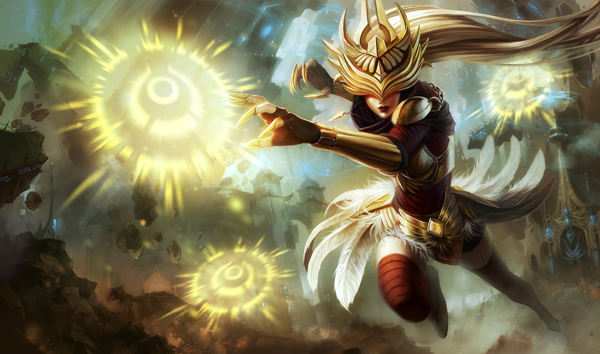
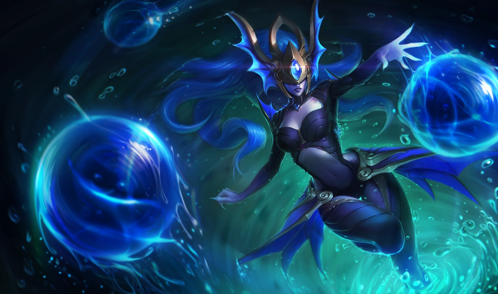
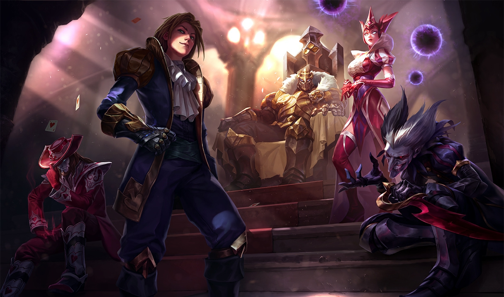
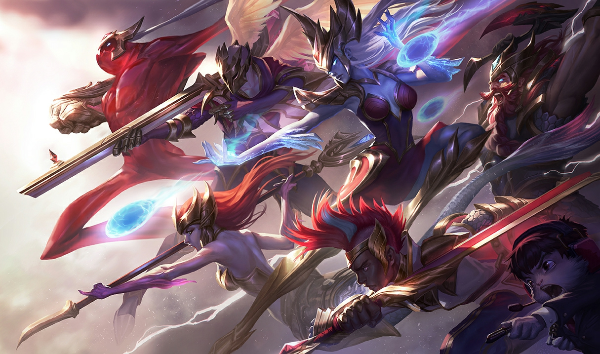
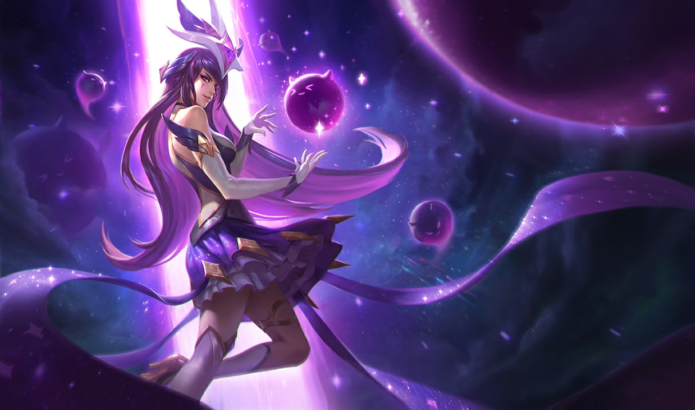

Syndra
La Soberana Oscura
Vida: 590 (+90 por nivel)
Daño de ataque: 67 (+4 por nivel)
Velocidad de ataque: 0.625 (+2.25% por nivel)
Velocidad de movimiento: 345
Regeneracion de vida: 5 (+0.8 por nivel)
Armadura: 28 (+3.5 por nivel)
Resistencia Magica: 32.1 (+1.25 por nivel)
Historia
Syndra nació con un inmenso potencial mágico y nada le gusta más que poner en práctica su increíble poder. Con cada día que pasa, su maestría de las fuerzas mágicas se torna más potente y devastadora. Syndra rehúsa cualquier noción de equilibro o mesura, pues únicamente desea mantener el control sobre su poder, incluso si ello significa aniquilar a las autoridades que quieren detenerla.
Durante su juventud en Jonia, el uso temerario de la magia de Syndra aterraba a los ancianos de su aldea. La llevaron a un templo retirado y la dejaron a cargo de un viejo mago. Para deleite de Syndra, el mago le explicó que aquel templo era una escuela, un lugar en el que podría desarrollar su talento bajo su supervisión. Aunque aprendió mucho durante su estancia allí, Syndra ya no sentía el poder creciendo en su interior como había ocurrido durante su juventud. Su frustración aumentaba más y más y, finalmente, se enfrentó a su mentor, exigiendo una explicación.
El mago le reveló que había adormecido la magia de Syndra, con la esperanza de que aprendiese autocontrol y mesura. Al sentirse víctima de tal traición, avanzó hacia el mago y le ordenó retirar el hechizo que retenía sus poderes. Él retrocedió y le explicó que, si no podía controlarse, se vería forzado a anular la magia de Syndra por completo. Furiosa, invocó su poder y estampó al anciano contra los muros.
Al morir su mentor, Syndra sintió como todo su potencial desatado la invadía por primera vez en años. A pesar de haber recuperado su libertad, se negó a volver a la sociedad que había tratado de robar su don. En su lugar, decidió transformar su antigua prisión en su propia fortaleza. Forzando los límites de su magia, arrancó la estructura de sus cimientos y la alzó hacia los cielos. Con libertad para ahondar aún más en su arte, ahora el objetivo de Syndra es volverse lo suficientemente poderosa como para destruir a los débiles y estúpidos líderes de Jonia... y a cualquiera que se atreva a intentar encadenar su grandeza.
Aspectos
    
Habilidades
Pasiva
Los hechizos obtienen efectos adicionales en sus rangos máximos. Esfera Oscura: inflige 15% de daño adicional a campeones. Fuerza de Voluntad: inflige 20% de daño verdadero adicional. Dispersar a los Débiles: la amplitud del hechizo aumenta un 50%. Poder Desatado: aumenta su alcance 75 unidades.
Esfera Oscura
Costo: 40/50/60/70/80 de Maná Alcance: 800 Syndra conjura una esfera oscura e inflige daño mágico. La esfera permanece y se puede manipular con las demás habilidades. Conjura una Esfera Oscura que inflige 50/95/140/185/230 (+65% Poder de Habilidad) de daño mágico. La esfera permanece por 6 seg y la puedes manipular con las demás habilidades de Syndra.Puedes lanzar este hechizo en movimiento.
Fuerza de Voluntad
Costo: 60/70/80/90/100 de Maná Alcance: 925 Syndra recoge y lanza una Esfera Oscura o un súbdito enemigo, infligiendo daño mágico y reduciendo la Velocidad de Movimiento de sus enemigos. Primer lanzamiento: Agarra a un súbdito enemigo o la Esfera Oscura seleccionada. Si no se selecciona un objetivo, agarra la Esfera Oscura más cercana. Segundo lanzamiento: Arroja a la unidad agarrada. Los enemigos alcanzados reciben 70/110/150/190/230 (+70% Poder de Habilidad) de daño mágico y un 25/30/35/40/45% de ralentización durante 150 segundo(s).Este hechizo se puede lanzar en movimiento.

Dispersar a los Débiles
Costo: 50 de Maná Alcance: 650 Syndra empuja a los enemigos y a las Esferas Oscuras e inflige daño mágico. Los enemigos impactados por las Esferas Oscuras son aturdidos. Empuja a los enemigos y a las Esferas Oscuras, infligiendo 70/115/160/205/250 (+60% Poder de Habilidad) puntos de daño mágico y a todos los enemigos con los que impactan. Las Esferas Oscuras que sean empujadas aturden a todos los enemigos que se encuentren en su camino durante 1.5 segundo(s).

Poder Desatado
Costo: 100 de Maná Alcance: 675 Syndra bombardea a un campeón enemigo con todas sus Esferas Oscuras. Utiliza todo el poder cataclísmico de Syndra y detona Esferas Oscuras contra un campeón enemigo. Poder Desatado manipula las tres Esferas Oscuras que orbitan alrededor de Syndra además de hasta 4 Esferas Oscuras creadas previamente. Daño por esfera: 90/135/180 (+20% Poder de Habilidad). Daño total mínimo: 270/405/540 (+60% Poder de Habilidad).